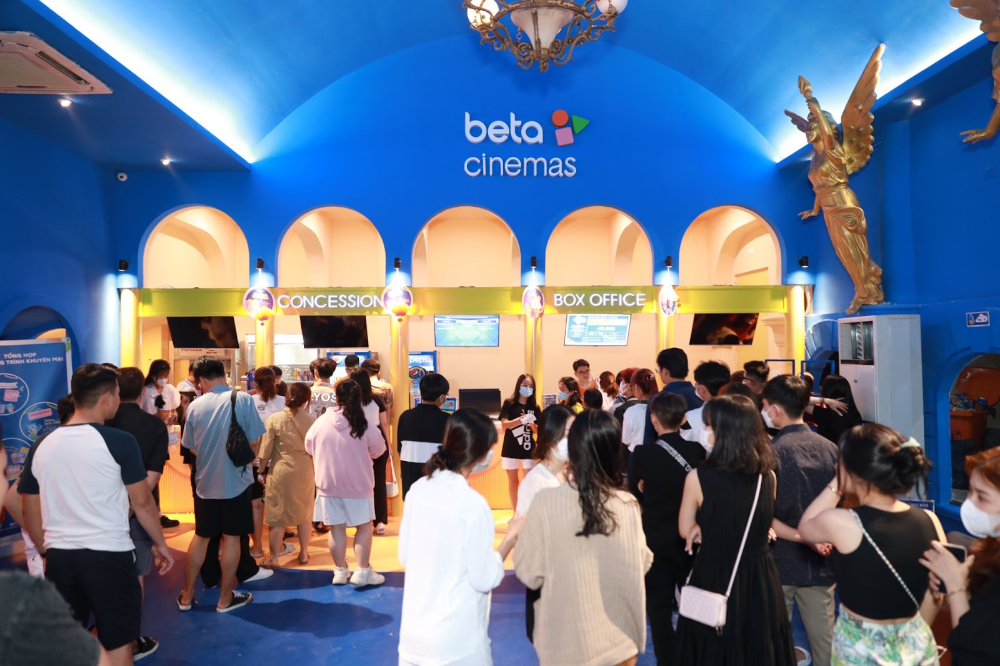

TIỀM NĂNG PHỤC HỒI VÀ PHÁT TRIỂN THỊ TRƯỜNG RẠP CHIẾU PHIM TẠI VIỆT NAM VÀ INDONESIA
Trải qua bao sóng gió của đại dịch Covid-19, thị trường rạp chiếu phim đã chứng kiến sự biến đổi đáng kể tại nhiều quốc gia toàn cầu. So với thị trường trên thế giới, tại Châu u doanh thu trên vé xem phim dự kiến đạt 3 tỷ đô vào năm 2023, tại Châu Á là con số 9 tỷ đô. Tại Châu Á, khu vực được đánh giá phục hồi nhanh chóng sau đại dịch cũng ghi nhận những tín hiệu tích cực.
Nhiều thương vụ đầu tư bạc tỷ vào ngành rạp chiếu phim xuất hiện, như mới đây nhất vào tháng 06.2023, thông qua IPO, Cinema XXI huy động được 2,2 ngàn tỉ IDR (145 triệu USD), với mức định giá 22,5 ngàn tỉ IDR (1,5 tỉ USD). Tại Việt Nam, Beta Cinemas cũng là doanh nghiệp duy nhất được nhận góp vốn 8 triệu USD từ quỹ đầu tư Daiwa PI Partner ngay giữa tâm dịch Covid vào tháng 6 năm 2020.
Việt Nam và Indonesia đều là hai nền kinh tế có nhiều tiềm lực, đang trỗi dậy và phát triển nhanh chóng. Năm 2020 - 2021 kinh tế thế giới chững lại do tác động của đại dịch COVID-19. Tuy nhiên khối lượng thương mại Việt Nam và Indonesia vẫn giữ được đà tăng với kim ngạch thương mại năm 2020 đạt 8,2 tỷ USD; năm 2021 đạt 11,5 tỷ USD, lần đầu tiên vượt mục tiêu kim ngạch 10 tỷ USD như cam kết của lãnh đạo cấp cao hai nước.

Yếu tố đầu tiên để so sánh hai thị trường rạp chiếu phim này chính là thời gian mà mỗi quốc gia phải đóng cửa để đối phó với đại dịch.
Năm 2020 và 2021 đã là những năm khó khăn cho cả Việt Nam và Indonesia khi các rạp chiếu phim phải đóng cửa để hạn chế sự lây lan của Covid-19. Theo Corona Pandemic Country Profile, Indonesia bùng phát dịch từ 03.01.2020 - 21.06.2023 tổng thống Joko Widoro huỷ bỏ tình trạng đại dịch và chuyển sang giai đoạn đặc hữu. Tại Việt Nam, thời gian thực hiện giãn cách toàn xã hội từ 01.04.2020 - 06.2023 chuẩn bị công bố Covid 19 thành bệnh đặc hữu.
Tuy nhiên, Việt Nam đã nhanh chóng đứng dậy sau đại dịch, mở cửa trở lại rạp chiếu phim và các hoạt động giải trí trong thời gian ngắn hơn so với Indonesia. Điều này đã giúp thị trường rạp chiếu phim của Việt Nam có cơ hội phục hồi nhanh hơn và duy trì sự quan tâm của khán giả.
Ngoài doanh thu, số lượng rạp chiếu cũng đóng vai trò quan trọng trong việc thể hiện tiềm năng phát triển của thị trường rạp chiếu phim. Việt Nam đã thể hiện sự tăng trưởng và mở rộng quy mô trong việc mở thêm rạp chiếu tại các vùng tỉnh lẻ, ven đô, tạo điều kiện thuận lợi cho việc thu hút khán giả. Đặc biệt, những rạp chiếu nội địa tại Việt Nam như Beta Cinemas cũng có hướng đi khác biệt khi tiên phong mô hình nhượng quyền rạp chiếu với mức giá hợp lí và phù hợp với nhiều đối tượng, điều này giúp cho quy mô rạp chiếu được mở rộng và khai thác tiềm năng xem phim của người dân Việt Nam.
Tổng kết, thị trường rạp chiếu phim của Việt Nam và Indonesia đã trải qua những biến đổi quan trọng sau đại dịch Covid-19. Tuy nhiên, Việt Nam đã thể hiện sự phục hồi nhanh chóng hơn và tiềm năng phát triển tốt hơn so với Indonesia. Sự linh hoạt trong việc đối phó với tình hình khó khăn, cùng với việc đầu tư vào sự đa dạng hóa trải nghiệm điện ảnh, đã giúp thị trường rạp chiếu phim Việt Nam bứt phá trong cuộc cạnh tranh với các thị trường khác. Chắc chắn, việc này đã mở ra những cơ hội mới và tạo nên một tương lai sáng cho ngành công nghiệp giải trí của đất nước.